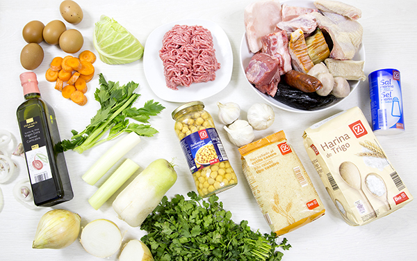
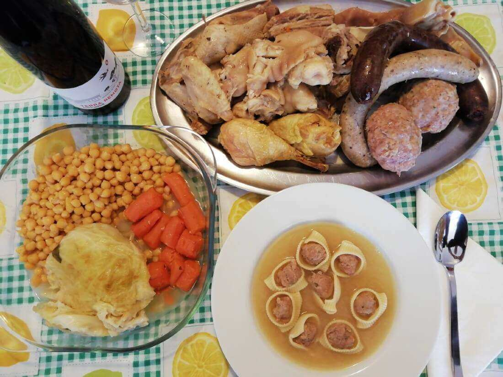
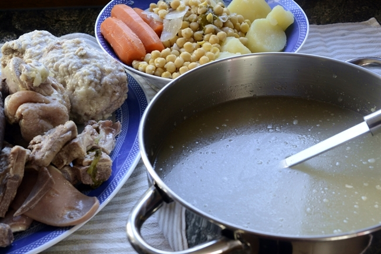
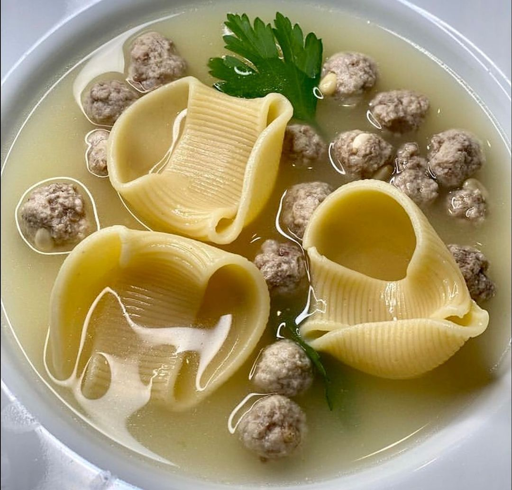
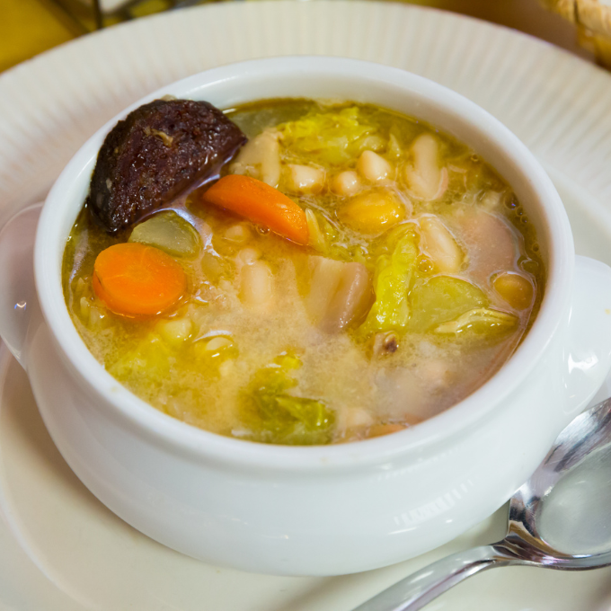
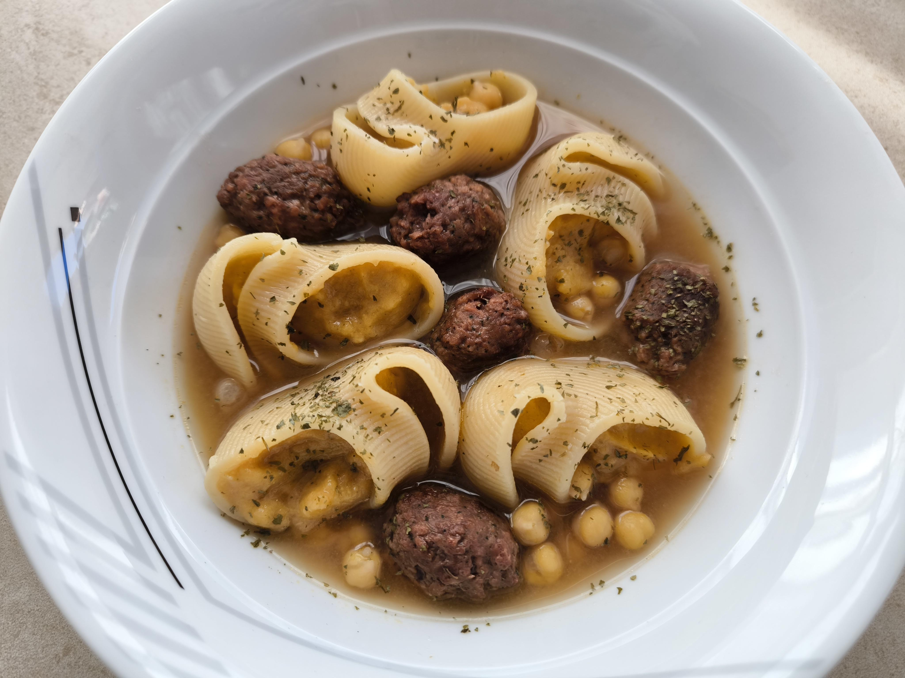

Escudella
Poques elaboracions expressen millor l’esperit del xup-xup que l’escudella: un guisat lent, profund i generós, on el brou recull l’ànima de la carn, la verdura i els llegums per convertir-se en pura cuina de la llar, i amb un significat especial per Nadal.
El testimoni més antic d’elaboracions que es poden considerar antecedents directes de l’escudella apareix al segle XIV, al Llibre de Sent Soví (c. 1320-1330), i, tot i que encara no es fa servir la paraula escudella com a nom del plat, descriu diferents preparacions d’olles caldoses amb carn, hortalisses i arròs o pasta que constitueixen la base històrica de l’escudella catalana.
L’escudella també va ser, durant segles, un plat d’elaboració pagesa: es posava a l’olla quan es marxava al matí a treballar i anava fent xup-xup durant hores i hores. Al segle XIV, Francesc Eiximenis afirmava que els catalans en menjaven cada dia de la seva vida. Això sí, la pilota, aquesta mena de mandonguilla amb esteroides que és una dels senyals d’identitat d’aquesta sopa llaminera i enriquida, solia estar feta amb carn de porc i pa. Avui, és de carn picada, perquè en alguna cosa hem millorat, fins i tot les classes humils.
Després d’aquest breu repàs de la història mastegada, espero haver-vos despertat les ganes de fer escudella.
Ingredients:
- 300 g de carn de vedella (agulla, jarret o botifarra)
- 300 g de carn de porc (costella o punta de pit)
- 150 g d’os de pernil poc salat o 150 g d’espinada de porc
- 150 g d’os blanc o de genoll
- 50-70 g de cansalada (opcional)
- 600-800 g de gallina o pollastre
- 150 g de cigrons secs (12 h en remull)
- 200 g de pastanagues
- 200 g de naps
- 120 g de porro
- 1 o 2 xirivies
- 80 g d’api
- 250 g de col
- 100-120 g de pasta petita (fideus 2-3 o pasta menuda)
- Sal
- 4 litres d’aigua (aprox., per a la cocció inicial)

Passos a seguir:
- Poseu la vedella, el porc, els ossos, la cansalada, si n’hi afegiu, i la gallina en una olla gran. Cobriu-ho amb 4 litres d’aigua freda i feu que arrenqui el bull suau. A mesura que vagi bullint, escumeu-ho amb compte, per obtenir un brou net i clar.
- Un cop retirades les impureses, afegiu-hi els cigrons, que prèviament haureu posat en remull, preferiblement dins d’una malla, i a continuació incorporeu-hi totes les hortalisses, senceres o tallades a trossos grossos. Deixeu-ho coure lentament, mantenint un bull baix i constant, unes dues hores i mitja, i afineu-ne el punt de sal cap a la meitat del procés, per ajustar l’equilibri del brou.
- Quan la cocció estigui feta, coleu el brou i reserveu la carn, la gallina i les verdures per separat. Si voleu un resultat més lleuger, retireu part del greix superficial del brou, tot i que tradicionalment se’n conserva una mica, perquè aporta sabor i untuositat.
- Per preparar l’escudella, torneu a posar el brou net al foc i feu que arrenqui el bull. Afegiu-hi la pasta i coeu-la el temps indicat al paquet, segons el format, normalment entre quatre i vuit minuts. Quan estigui a punt, serviu el brou amb la pasta calenta en plats fondos.
- Per presentar la carn d’olla, poseu en una plata les peces de carn, la gallina trossejada o desossada, les verdures cuites i els cigrons. Serviu-la com a segon plat, i és habitual acompanyar-la amb un rajolí d’oli d’oliva o un allioli suau, segons el costum de cada casa.
Possibles presentacions:





He seguit la recepta aquest Nadal i ha quedat bonissima!!!